|
Note
|
This document is a translation of a Japanese article by nari regarding garbage collection (GC), published in Rubyist Magazine. |
Introduction
This article is meant to be an easy to understand explanation of GC algorithms to those who think to themselves "I get that garbage collection is useful, but I don’t really understand how it all works". An explanation of how the CRuby GC works will follow. Finally we’ll look a little at recent studies on Ruby GC alternatives. Oh, just to set the record straight, the GC described in this article and the Game Cube system has no relationship :-)
When It Comes To Talking About Garbage Collection
At the December 2008 Kyushu Ruby 01 Conference, I asked the audience "How many of you here have some interest in garbage collection?" Out of 200 people, only 3 raised their hands (even so I still proceeded to talk to no end about the subject). It seems as though the majority opinion about garbage collection is "As long as everything works okay behind the scenes I’m all okay." However garbage collection is one of the taken for granted features that is built into a good number of language processors. It would not hurt as a programmer to properly understand the structure and internal implementation of garbage collection. I would be greatly pleased if you read this article with a "All right, I’ll take a little break and hear out your talk about garbage collection" type of mindset.
What Is GC
GC is an abbreviation for "Garbage Collection". To execute GC means detecting unused regions in memory and freeing the memory held by these regions. It goes without saying that many programmers consider this a great blessing, so I think I’ll leave the basic definition at that.
GC Enabled Language Processors
Many language processors these days have garbage collection already built-in. A few examples include:
-
Ruby
-
Perl
-
Java
-
Haskell
-
C#
-
Gauche
One could say that garbage collection is a feature that modern language processors can’t be without.
GC Algorithms
Now then how does garbage collection decide what is considered garbage for collection? Lets take a look at some of the garbage collection algorithms.
The 3 Major Algorithms
Garbage collection was first implemented at around the year 1960. Since then much work has gone into the field, and gave birth to the riser of newer algorithms. A good majority of these algorithms can be traced back to three standard algorithms. These are:
-
Mark & Sweep
-
Copying
-
Reference Count
As they are considered the core foundation, their understand will help bring the developer closer to understand garbage collection.
Before We Begin
It’s generally assumed when talking about garbage collection algorithms that the users has existing knowledge of machine stacks and registers. However this knowledge won’t be necessary to describe the true nature of the matter. For this purpose I’ll discuss just the essentials to make it easier for the reader to understand.
Book Arrangement And Garbage Collection
|
Note
|
It is tradition in Japan to do large scale cleaning at the end of the year. This is done to start the new year off with a clean slate. Source |
The year has already started, but I’m sure many people have cleaned their homes and offices at the end of the year. I myself was also tasked with end of the year cleaning at my company. At the office there is a bookshelf that is tightly packed with many technical publications. Some are old and will never be read again, others are quality works like the Ruby Hacking Guide (RHG). Here I decided to judge between necessary and unnecessary publications, and throw out the unnecessary ones. However the problem is not so simple as it sounds.
The reason being is that this bookshelf is shared by everyone in the company, and it would be misguided to judge what is important based on my personal opinion. A work that I think no one will read might be useful to another coworker. This puts the main task at hand to find out which books are unwanted by everyone in the company. So how will I go about this task? The image below is meant to be a simple representation of the bookshelf.
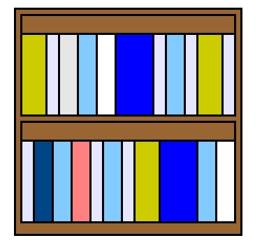
Mark & Sweep
While a bit of an experimental idea, how about the following method. I’ll take each an every book from the bookshelf, and ask everyone in the office "Do you think you’ll use this book next year?" The more specific method would work as follows:
-
Start by taking a single book from the top left of the shelf
-
Walk around the office and ask "Do you think you’ll use this book next year?"
-
If someone answers "Yes, I will!", then I’ll apply a red mark on the spine and return it to the shelf
-
If everyone answers "No, don’t need it at all", then I’ll return the book to the shelf as is
-
Repeat this process, working down to the lower right corner of the bookshelf
After all is said and done, the bookshelf turns out to look like the following:
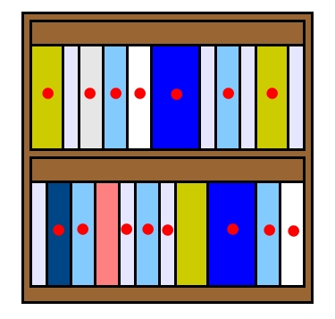
Using this method, valuable publications could be determined by the presence of a red mark, and unnecessary works by the lack of one. This process is known as the "Mark Phase".
The next step is to throw out the unnecessary books. The process works something like:
-
Once again, take each book from the bookshelf, starting from the upper left
-
If the book has a red mark on the spine, take the mark off and return it to the bookshelf
-
However, if nothing is on the spine, throw the book into the trash
-
Repeat this process, working down to the lower right corner of the bookshelf
Once all is said and done, the bookshelf looks like the following:
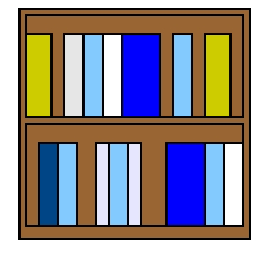
Using this method, valuable books are returned to the bookshelf, and unnecessary books are disposed of. Now only the valuable books are left. This process is known as the "Sweep Phase". The entire process is therefore known as "Mark & Sweep".
Cons
The bookshelf is now sorted, and all is fine and dandy. However there unfortunately remains one problem. Between some of the books there is a space of variable width. So if a book is slightly larger than any of the space, it won’t fit into the bookshelf.
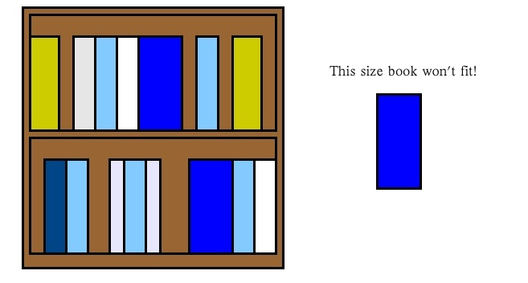
This problem is known as "Fragmentation". If a new book needs to be put into the bookshelf, it may lead to issues. This requires thinking up a new method for sorting. As a side note CRuby utilizes this Mark & Sweep algorithm, and is subject to the same fragmentation problem.
Copying
With just one bookshelf there is the problem of fragmentation. So instead two bookshelves will be used for arranging the books.
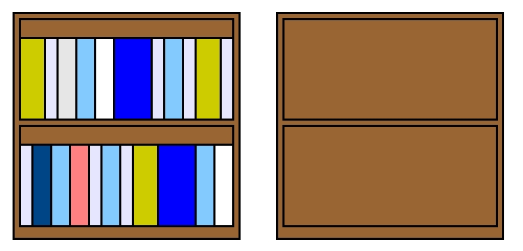
Specifically the following process will be used for arranging:
-
Start by taking a single book from the top left of the shelf
-
Walk around the office and ask "Do you think you’ll use this book next year?"
-
If someone answers "Yes, I will!", place the book in the empty bookshelf
-
If everyone answers "No, don’t need it at all", return the book to the original bookshelf
-
Repeat this process, working down to the lower right corner of the bookshelf
Once all is said and done the result looks something like the following:
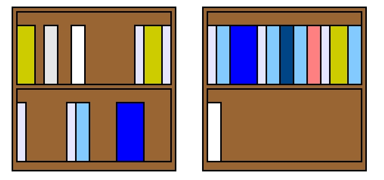
Using this method, valuable books end up in the bookshelf on the right, and unnecessary books end up in the original bookshelf. With the Mark & Sweep method unnecessary books were indicated through the lack of a mark. With this method, they are instead designated by the resulting location that they are put in. So now to go about the removal of the unnecessary books. Well that’s quite simple:
-
Throw out all of the books in the bookshelf on the left
This gives the following:
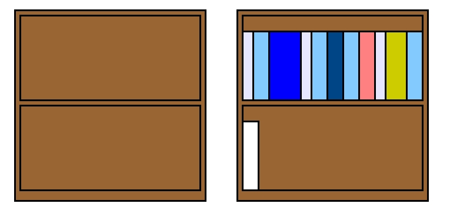
Without thinking about anything all of the books on the left bookshelf can be disposed of. This is method is known as the "Copying" algorithm. Another thing to note is that the next time books are to be arranged, valuable books will be transferred to the bookshelf on the left instead.
Pros
Copying provides faster sorting than Mark & Sweep. The Mark & Sweep method also requires an additional pass over all the books in order to dispose of the unnecessary books properly, whereas Copying doesn’t require this. Also the issue with fragmentation doesn’t exist, and it’s easier to fit in new books.
Cons
It’s faster and doesn’t have fragmentation issues, so it’s perfect! So let’s get started right away. Unfortunately there’s a problem. There are no empty bookshelves laying around. All of the bookshelves are packed with books *facepalm* Comparing to Mark & Sweep, twice the storage space is required. This certainly does no good. A new bookshelf could be purchased, but that seems a bit overkill. Next up a fundamentally different method will be tested.
Reference Count
Is the reader the type that works on summer homework everyday, or the type that waits until the last two days to complete it? I happen to be in the later group. Because of this, I have recollections of my parents scolding me saying "It’s because you’re out playing everyday that things turn out like this!" With this in mind, how about throwing out the notion that the bookshelf needs to be arranged at the end of the year? If the bookshelf is arranged regularly, there’s no need to fumble around at the end of the year doing it.
With this in mind the "Don’t Toss Me Card" method is created.
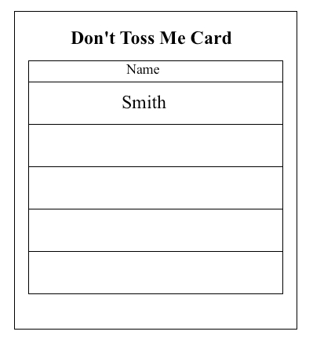
The "Don’t Toss Me Card" is as the name states a card in which anyone who considers the book valuable will write their name in the card. This card is created for each and every book, then placed inside of it. So how does the usage of the "Don’t Toss Me Card" work? Take for example a fictional character "Mr. A" who has purchased a new book.
-
Mr. A purchases the book
-
He then creates the "Don’t Toss Me Card"
-
Mr. A then writes his name in the "Don’t Toss Me Card" and places it inside the book
-
Mr. B realizes the presences of the new book
-
Mr. B thinks to himself "I think I might want to read this book" and writes his name in the "Don’t Toss Me Card"
At this point, the "Don’t Toss Me Card" looks something like this:
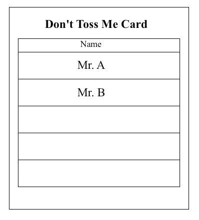
In this manner, the book that Mr. A purchases begins to fill up with more names. So, how does this book become unnecessary? It works something like this:
-
Mr. A finishes reading the book and thinks to himself "I’m won’t read this again so I don’t need it anymore"
-
Mr. A crosses his name off the "Don’t Toss Me Card"
-
Mr. B thinks to himself "The technology in this book has gotten pretty old so I don’t feel like reading it anymore"
-
Mr. B crosses his name off the "Don’t Toss Me Card"
-
Since all the names have been crossed off the "Don’t Toss Me Card", the book is considered unnecessary
-
The last person to cross their name off, Mr. B, throws the book away
In this manner unnecessary books are safely disposed of.
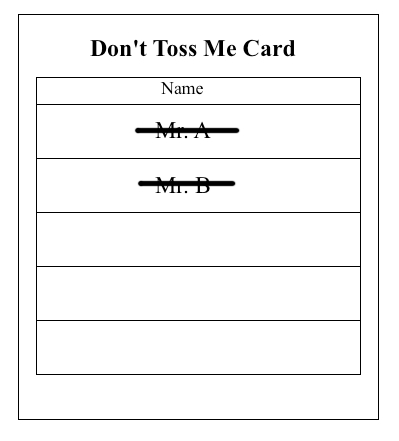
This method is referred to as the "Reference Count Algorithm". In the example the interests of the employees are referenced and counted. However in a more practical sense references of mutual objects are instead counted.
Pros
The benefit of this method is the burden is now decentralized. Cleaning the bookshelf at the end of the year is very difficult, but handling it on a normal basis is much more manageable.
Cons
Annoyance is the main problem with this algorithm. With the Reference Count algorithm, one must ensure that they fill out their name and erase it later. However someone is likely to forget to do this. If someone doesn’t fill out their name, a valuable book could get thrown out, and if someone forgets to cross out their name, a useless book is left sticking around. This is very annoying.
So How Fares The Arranging?
The book arrangement is very annoying isn’t it? Fragmentation can occur, another bookshelf could become necessary… However this is quite a distorted view of things to show how garbage collection works. A more practical solution would simply be to throw out books that no longer look necessary. Also there’s the method of not sorting the books at all :-) In my case I simply threw out books that didn’t look necessary to me. There’s the chance that someone wanted to read that book, but oh well that’s life!
A Quick Summary
This section used an easy to understand explanation of garbage collection using the arrangement of books as an example. It was a bit distorted however. I wonder if there is still the reader who thinks to themselves "I want to try and implement this!", or feels that this explanation is not detailed enough.
The Ruby GC Structure
Now that the reader has become familiar with the basics of garbage collection algorithms, I’ll explain the structure of the Ruby GC. First off it is, as mentioned previously, based on the Mark & Sweep algorithm. Since the basics of algorithm have been touched upon in the previous section, we’ll look at how the Ruby GC implements it.
|
Warning
|
From here on out a good amount of knowledge in C and Ruby is required |
Mark & Sweep
Below is a sample program that has been prepared for explanation purposes:
#Child class definition
class Child; end
#Array creation
arry1 = []
#Insertion of Child class instance
arry1 << Child.new
#Array creation
arry2 = []
#Insertion of Child class instance
arry2 << Child.new
arry2 << Child.new
#Destroy the reference
arry2 = nil
#Start the GC process!
GC.start
We’ll now take a look at how CRuby would operate if we were to run this program. First is the class definition and the creation of the array.
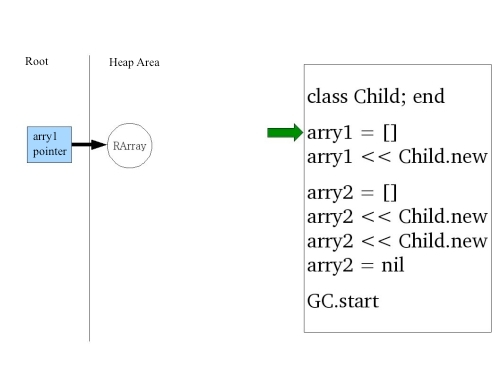
First is the heap area referenced in the diagram. This heap area is not referring to the C heap area, but instead the heap area that is used by Ruby. The Ruby heap area is maintained as a collection of RVALUE types.
|
Note
|
For the curious, RVALUE is declared in gc.c in the Ruby source. |
The RArray that was just created is defined in this heap area. This is the structure of the array instance created by Ruby. When an array is created in Ruby, the CRuby side stores the result in a structure called RArray. Afterwards, a pointer to the RArray is inserted in the root area. This pointer has a similar role to the arry1 variable on the Ruby side. The details of root will be explained later on, so for now think of this like the management of local variables.
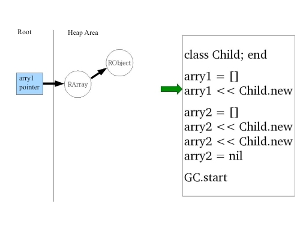
A Child class instance has been created. This object is stored in the heap area internally in a structure called RObject. Additionally, a pointer to the object is inserted into the RArray.
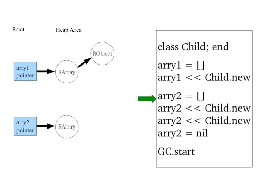
As with before, an RArray structure is added to the heap area, and a pointer referencing it is inserted into the root.
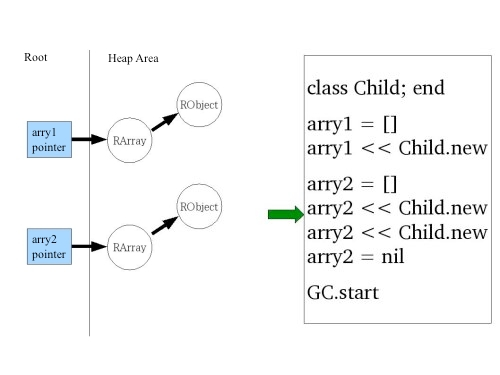
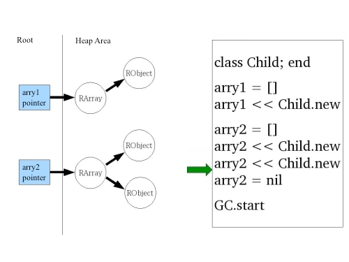
The same explanation applies here as before.
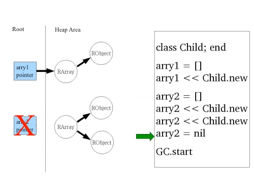
The local variable arry2 is set to nil. This causes the removal of the pointer to the RArray from the root. As you can tell from the image, there is no longer a reference pointing to the RArray object on the heap. This means the object is no longer necessary and should be collected as garbage. The same status applies for the RObjects contained within the RArray.
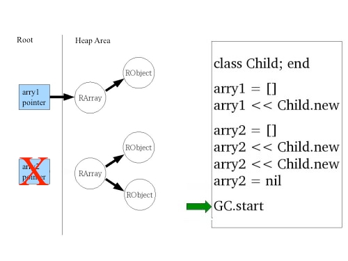
Now for the long awaited garbage collection phase. In what way will the unnecessary objects be freed?
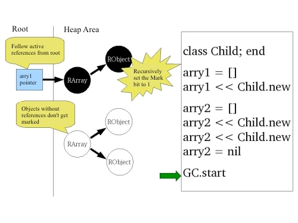
This is the beginning of the Mark processing phase. During this phase active objects are marked recursively starting from root. More specifically it sets every structure’s mark bit to 1. If the object has already been marked then it will be skipped. The important thing to note is that objects which are not referenced are not marked. This is similar to the story about the bookshelf. In this manner active objects can be discerned from unnecessary objects.
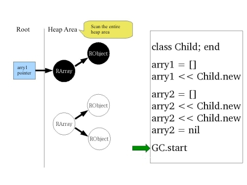
Next is the sweep phase. In the sweep phase, objects are checked to see if they have been marked or not.
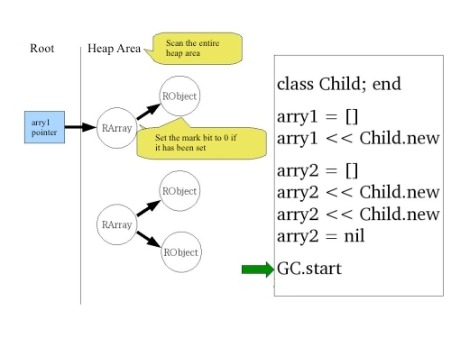
If the object has the bit mark set, its bit mark is set back to 0. This is to prevent bugs from occurring during the next GC pass.
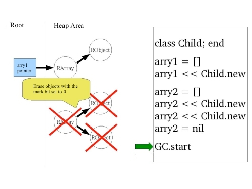
If the mark bit is not set, then the objects are removed. This completes the GC process.
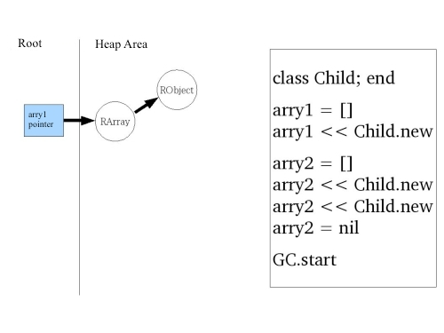
Now unnecessary objects are removed and only active objects remain.
Conservative GC
Now what about the talk about root that was put off from before? What exactly is root? Put simply it is the area in which pointers to objects are stored. More specifically it is the area where the machine stack, register, global variables, and Ruby internal global variable management table is stored. If an object is pointed to from a pointer in root, that object is considered active. Following the bookshelf example, the root is the bookshelf shared by everyone, and pointers in the root are considered to be the feeling that the book is important.
Object Lifetime Definition
The definition of object lifetime is as follows:
-
Objects pointed to by the current user program’s memory area (register, stack, global variables, etc. in other words root) are considered active (necessary objects)
-
Objects pointed to by other active objects are themselves active
-
All other objects are considered to be garbage and collected accordingly
Determining Pointers That Reference Objects
In the machine stack and register there are numerous values stored that have no relation to pointers. For example, int values or char values. Basically many values are mixed together without any type of sorting. With this in mind, how are pointers to objects identified? In CRuby, this is determined by whether or not the value is stored in the heap area. As it is bit difficult to put into words, I’ve written some Ruby code to help explain. The heap area is assumed to be from 0x0000 to 0x1000.
def is_pointer_to_heap?(value)
heap_start = 0x0000
heap_end = 0x1000
return true if heap_start <= value && value < heap_end
return false
end
stacks = [0x0000, 0x0500, 0x10000]
is_pointer_to_heap?(stacks[0]) #=> true
is_pointer_to_heap?(stacks[1]) #=> true
is_pointer_to_heap?(stacks[2]) #=> false
As per the code above, pointers to objects are determined through the following method:
-
If the value is inside the heap area, it is considered a pointer to an object
-
If the value is outside of the heap area, it is considered not to be a pointer to an object
Through this method it is easy to determine what pointers are pointing to objects. However this method is not perfect. For example, it is unable to determine the difference between the pointer 0x0500 and the integer 0x0500.
integer = 0x0500
is_pointer_to_heap(integer) #=> true
If there is an inactive object at address 0x0500, it will be mistaken for an active object. With this method anything that looks like an object pointer is considered to be active. This is unfortunately something that can’t be helped… This method of attempting to safely remove doubtful objects is a very conservative outlook, and thus this process is known as "Conservative GC". CRuby uses this conservative GC in its implementation.